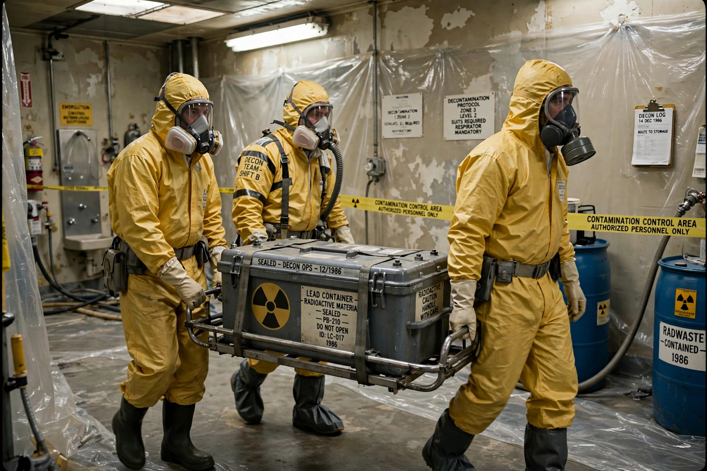

Goiânia accident
| Goiânia accident | |
 | |
| Date | 13 September 1987 (source removed) |
|---|---|
| Location | Goiânia, Goiás, Brazil |
| Material | Caesium-137 (teletherapy source) |
| Deaths | 4 |
| Contaminated | 249 people identified; c. 112,000 monitored |
| INES level | 5 |
The Goiânia accident was a radioactive contamination accident that occurred in Goiânia, in the Brazilian state of Goiás, in September 1987. It is considered one of the worst radiological accidents in history, rated level 5 on the International Nuclear Event Scale.
The source
A radiotherapy clinic that had moved premises left behind a teletherapy unit containing a caesium-137 source. On 13 September 1987, two scavengers removed the source assembly and eventually broke open the capsule, finding a glowing blue powder — caesium chloride — which they and their families handled, sold, and shared out of fascination with its glow. The six-year-old Leide das Neves Ferreira, who ate food with contaminated hands, became a symbol of the tragedy.
Response and consequences
When the contamination was recognised on 29 September, authorities mounted a huge response: about 112,000 people were monitored, 249 were found contaminated, dozens of houses were demolished, and tonnes of contaminated waste were buried at a repository near Abadia de Goiás. Four people died of acute radiation syndrome, including Leide das Neves. The accident led Brazil and the IAEA to tighten control of orphan radioactive sources worldwide.
See also
Recreated from memory as a standalone page.